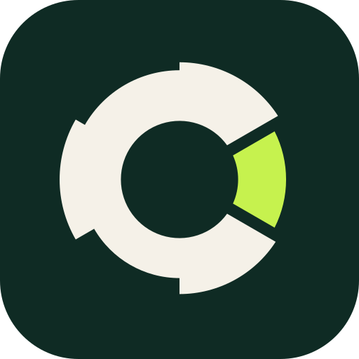

60/100
Riferimento LightStartup per Seed: 56
Ozmetra è un software con IA che analizza i processi interni delle startup. Aiuta acceleratori, incubatori e poli d'impresa a scegliere meglio a ogni bando e dà continuità al mentoring quando il programma finisce.
Prenota una chiamata Sei una startup? Scopri la diagnosi per i team appena cresciuti
Candidata: Rutalia SolutionsCosa analizzano gli agenti in ogni startup
Il prodotto, in 40 secondi
Registrato nel nostro software con i dati di esempio di Rutalia Solutions, una startup candidata. Così il tuo team vede ogni azienda del programma.
60/100
Riferimento LightStartup per Seed: 56
Nivel 1 · Emergente
La stessa analisi aiuta il tuo team a decidere e ogni startup a migliorare.
Ozmetra analizza come funzionano dentro le startup candidate e le confronta con lo stesso framework. Vedi quali si adattano meglio al programma e hanno più possibilità di crescere.
Ogni mentor arriva sapendo dove ogni startup è debole: operazioni, vendite, team o finanza. Le sessioni servono a migliorare, non a diagnosticare.
Le startup possono continuare a usare Ozmetra con un'implementazione su misura: è un SaaS ibrido che adattiamo a ogni azienda. Il lavoro fatto nel programma continua nel quotidiano.
Più che venderti un prodotto finito, vogliamo che lo proviate senza costi e ci aiutiate a dargli forma con il vostro feedback.
Quattro agenti specializzati percorrono ogni startup come farebbe un bravo analista delle operazioni. Il tuo team vede solo il risultato.
Intervista il team della startup in chat o a voce e legge i documenti che decide di condividere: processi, OKR, verbali, bacheche.
Ogni evidenza viene assegnata a un'area del framework. Niente resta un'opinione isolata: tutto ha una fonte.
Valuta ogni processo in quattro dimensioni: cosa è definito, come viene eseguito, se viene misurato e se reggerà quando la startup crescerà.
Consegna un piano prioritizzato per impatto e sforzo, con il perché di ogni passo: la base per il mentoring.
Ciò che è normale in pre-seed è un campanello d'allarme in Serie A. Ozmetra confronta ogni startup con il riferimento del modello LightStartup per la sua fase, così confronti candidate molto diverse con gli stessi criteri.
I riferimenti per fase provengono dal modello LightStartup, sviluppato all'Università Rey Juan Carlos, non da un database di startup comparabili. Quando avremo dati nostri, lo indicheremo.
Prima di iniziare adattiamo domande, pesi e fonti ai vostri criteri di selezione e al settore di ogni startup.
Valuta all'ingresso, all'uscita e dopo il programma, e guarda cosa è migliorato.
Ogni startup decide quali fonti e persone partecipano.
Valuta tutte le startup con lo stesso framework e individua dove ognuna ha bisogno di aiuto.
La stessa analisi serve a preparare la documentazione richiesta da norme come ISO 9001 o ISO/IEC 20000-1. Non è l'obiettivo del programma, ma è un valore aggiunto per le startup che lavorano con grandi clienti o con la Pubblica Amministrazione. La certificazione la rilascia un ente accreditato.
Un modello di maturità a livelli. Ogni livello aggiunge solo i processi che una startup può sostenere in quel momento, senza la burocrazia di una grande azienda.
E quando la startup cresce, prosegue con il modello per PMI senza ripartire da zero.
Ogni attività è valutata con evidenze: non raggiunta, raggiunta in parte o raggiunta del tutto.
Ozmetra si basa su due framework di valutazione sviluppati all'Università Rey Juan Carlos, fondati sulla famiglia di norme ISO/IEC 33000 e convalidati in aziende reali.
Ispirato a
Startup con processi valutati, più preparate a crescere
Lo studio LightStartup conclude che un'azienda che valuta e migliora i propri processi interni è più competitiva, accede meglio ai finanziamenti ed è più attraente per gli investitori.
Tre domande, senza registrazione. Ti diciamo dove Ozmetra porterebbe più valore e prepariamo la demo su quel punto.
Con 11 a 50 personas, los procesos que funcionaban de palabra empiezan a romperse.
Grazie. Ti scrivo entro 24-48 ore per conoscere il vostro bando e preparare una demo con i vostri criteri.
— Ángel, fondatore di Ozmetra
Il pilota gratuito è pensato per i programmi di accelerazione e incubazione. Per le startup abbiamo una diagnosi dei processi consegnata in due settimane.
Vedi la diagnosiSe il vostro acceleratore o incubatore non lavora ancora con noi, dicci quale è a ozmetra.solution@gmail.com e gli scriveremo.
Ti chiamo io, Ángel, nella fascia che hai scelto. Se alla fine non ti va bene, scrivimi a ozmetra.solution@gmail.com e la spostiamo.
Lo provate senza costi con il vostro prossimo bando. Configuriamo gli agenti con i vostri criteri di selezione, le startup condividono le informazioni che scelgono e il vostro team vede i risultati. In cambio, ci aiutate a migliorare il prodotto con il vostro feedback.
Ogni startup decide quali documenti, strumenti e persone partecipano e cosa condivide con il programma. Accedono solo le persone che autorizzate.
No. Ozmetra fornisce evidenze su come funziona dentro ogni candidata, con la fonte di ogni conclusione. La decisione resta al vostro team.
Il pilota è gratuito. Siamo in fase MVP: prima di parlare di piani a pagamento vogliamo che il prodotto si adatti al vostro programma.
Possono continuare a usare Ozmetra con un'implementazione su misura, perché è un SaaS ibrido che adattiamo a ogni azienda. Così il lavoro fatto nel programma continua nel quotidiano.
Certo. Te lo mostriamo in videochiamata o di persona, nella vostra sede. Lasciaci il tuo numero o richiedi il pilota e lo organizziamo. Prenota una chiamata
No. Le aiutiamo a preparare i processi, la documentazione e le evidenze richieste da norme come ISO 9001 o ISO/IEC 20000-1. La certificazione la rilascia un ente accreditato dopo il suo audit.
Sui framework LightSME e LightStartup, pubblicati su una rivista e in un congresso scientifici, fondati sulla famiglia ISO/IEC 33000 e convalidati con casi reali di PMI e startup.
Nel pilota lavoriamo con un massimo di 10 startup. Se il vostro bando è più ampio, partiamo dalle finaliste.
Ogni startup decide cosa condividere e chi partecipa. Accedono solo le persone che autorizzate, cancelliamo i dati quando lo chiedete e, prima di iniziare il pilota, firmiamo con ogni programma un accordo sul trattamento dei dati.
Ozmetra è stata fondata da Ángel León e applica i framework LightSME e LightStartup, sviluppati all'Università Rey Juan Carlos. In fase MVP, seguo personalmente ogni pilota.